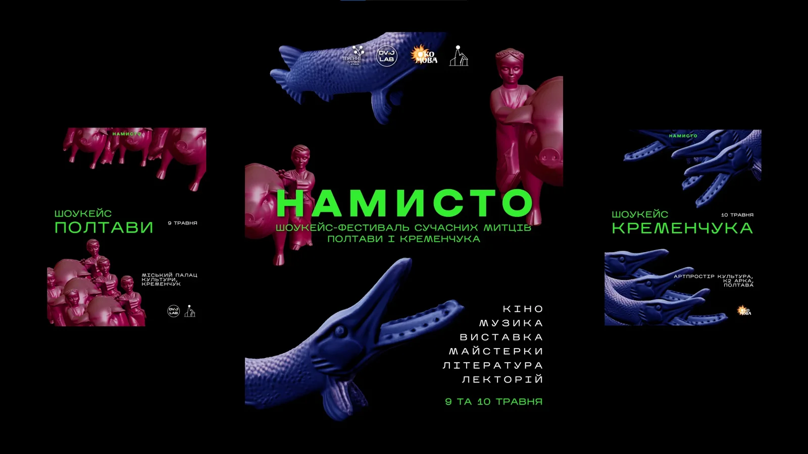
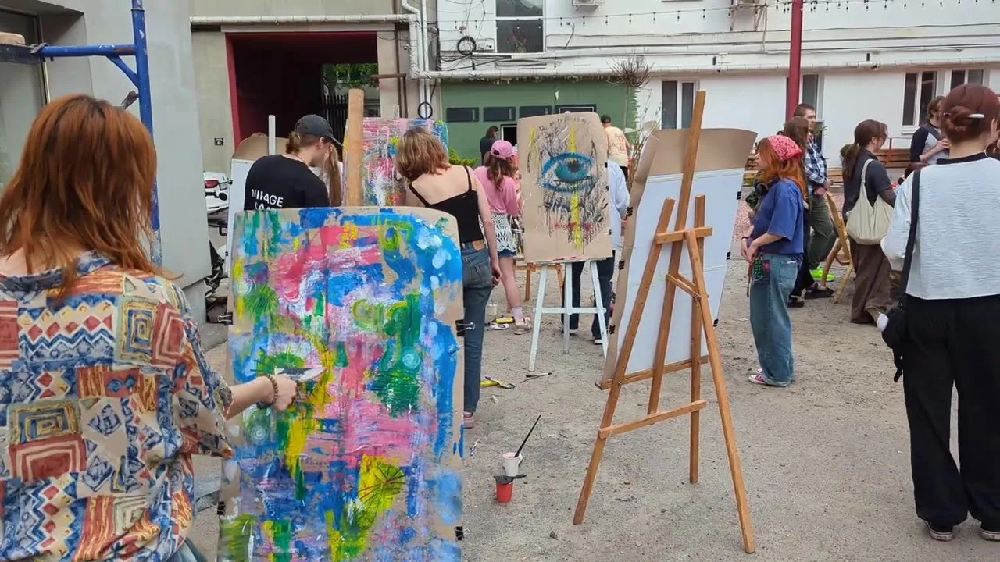

НАМИСТО

«Намисто» — дводенний шоукейс-фестиваль локального сучасного мистецтва, що об'єднав три незалежні культурні спільноти Полтави та Кременчука у форматі взаємного представлення.
Протягом двох днів міста почергово ставали майданчиками для презентації мистецьких практик, локальних ініціатив і культурних середовищ одне одного.
Фестиваль відбувся 9 травня в Кременчуці та 10 травня в Полтаві. Його програма поєднала музику, кіно, літературу, візуальне мистецтво, лекції, екскурсії та майстер-класи.
Відео

НАМИСТО — відео з фестивалюYouTube ↗Концепція та підхід
Ідея «Намиста» виникла з потреби не лише розвивати локальні культурні сцени, а й налагоджувати сталі зв'язки між ними. Фестиваль запропонував модель горизонтального обміну, у якій міста не конкурують за культурну увагу, а відкривають одне одному власні мистецькі середовища.
Назва стала метафорою такого об'єднання: окремі елементи, кожен зі своєю формою та характером, зібрані разом, утворюють цілісність. Так само різні культурні спільноти, практики й досвіди формують спільне надбання регіону.
Формат і програма
Фестиваль розгорнувся як двосторонній культурний обмін. 9 травня Кременчук приймав полтавську програму в Міському палаці культури, а наступного дня Полтава стала майданчиком для презентації кременчуцьких митців в артпросторі «Культура» (К2 АРКА).
Програма охопила різні напрями сучасної культури: музичні виступи, кінопокази, літературні читання, лекції, міські екскурсії, виставки, майстер-класи та художні інсталяції. Вона знайомила аудиторію не лише з окремими авторами й роботами, а й із діяльністю спільнот, які формують культурне життя обох міст.
Такий формат дозволив побачити локальні сцени зсередини — через людей, незалежні ініціативи, мистецькі практики та історії місць.
Організація та партнерство
Фестиваль створили три культурні спільноти:
«О'Комова» (Кременчук) — культурне об'єднання, що ініціює мистецькі події та створює платформи для взаємодії. @okomo.va
«Двіж Лаб» (Полтава) — спільнота, яка розвиває середовище навколо сучасного мистецтва та культурної самоідентифікації. @dvij_lab
ГО «Креативна область Мислення» (Полтава) — організація, що працює з міждисциплінарними мистецькими проєктами, аудіовізуальними колабораціями та дослідженнями.
Спільна робота трьох команд стала основою фестивалю: кожна представляла власне місто, його культурне середовище та людей, які працюють над його розвитком.
Підтримка
«Намисто» стало переможцем грантової програми воркшопу «Зав'язь», реалізованої культурною агенцією «Терени». Програму профінансували Adam Harber Foundation та Obriy Holiday Village.
Фестиваль також мав благодійну складову: під час подій тривав збір коштів на підтримку ініціативи Майстерні Frame зі створення мобільних госпіталів для фронту. Ціль збору становила 100 000 гривень на забезпечення евакуаційного автомобіля «Бублик».
Значення для культурного середовища
«Намисто» створило простір для знайомства та взаємодії між культурними спільнотами двох міст, які часто розвиваються окремо одна від одної. Фестиваль показав, що регіональна культурна сцена може формуватися не лише навколо окремих інституцій чи великих центрів, а й завдяки горизонтальним зв'язкам між незалежними ініціативами.
Для ГО «Креативна область Мислення» участь у створенні «Намиста» стала можливістю розвивати міжміську співпрацю та представляти полтавське сучасне мистецтво в ширшому регіональному контексті.
«Намисто» — це спроба з'єднати окремі культурні середовища в мережу, у якій взаємодія стає основою спільного розвитку.
Інші проєкти ГО «Креативна область мислення»